Motion design · Typography / 2023
7 Rings
A kinetic typography piece inspired by Ariana Grande’s “7 Rings”. I explored how changes in scale, timing, and camera movement can turn lyrics into a visual rhythm.
Watch the project ↗- My role
- Motion design
- Context
- Kinetic typography project
- Tools
- After Effects · Illustrator

Starting with the lyrics
I began with a more illustration-heavy direction, then narrowed the piece to typography and a smaller set of scenes. That shift gave the words more space and made rhythm the organising idea.
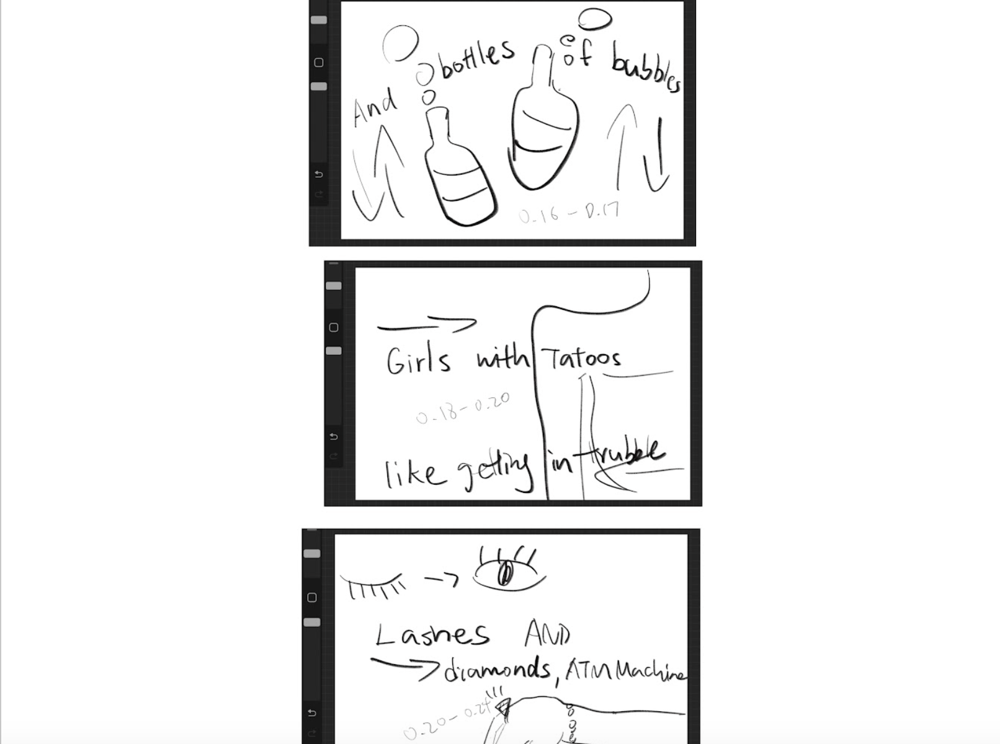
Type, timing, and camera movement
Scale changes and camera moves give the type depth. I used pauses between bursts of movement to create anticipation, then adjusted speed graphs to make transitions feel less mechanical.
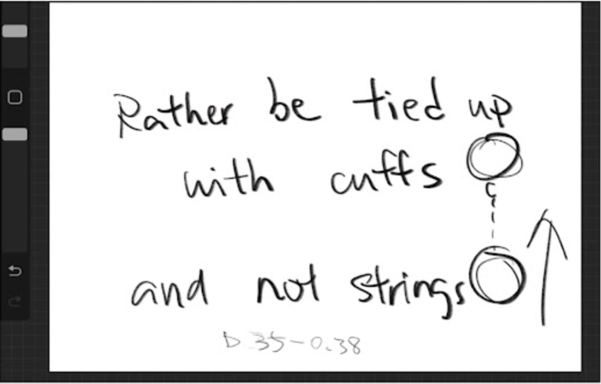
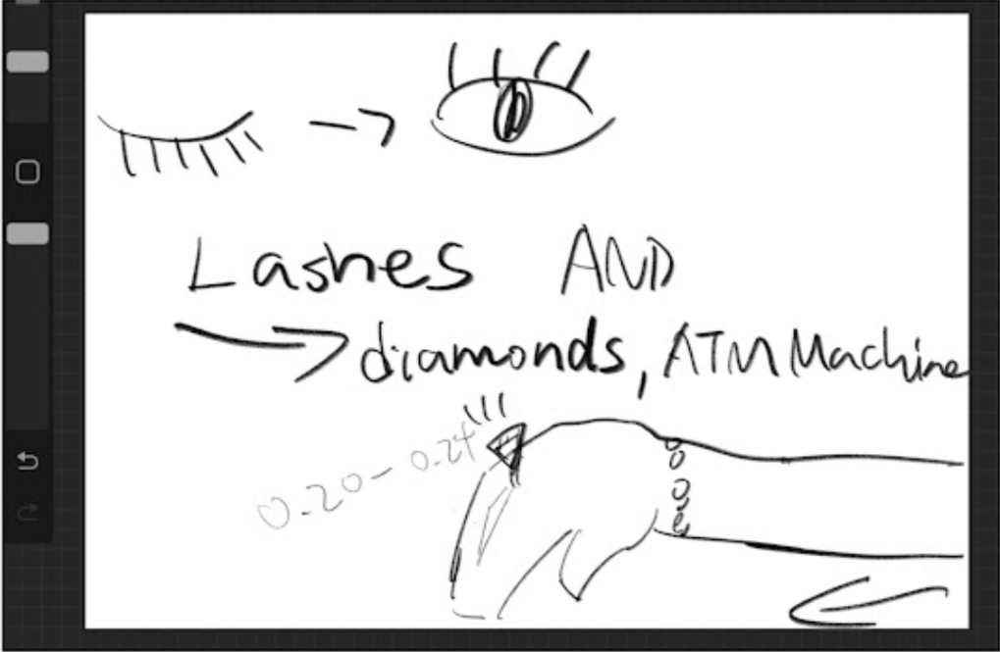
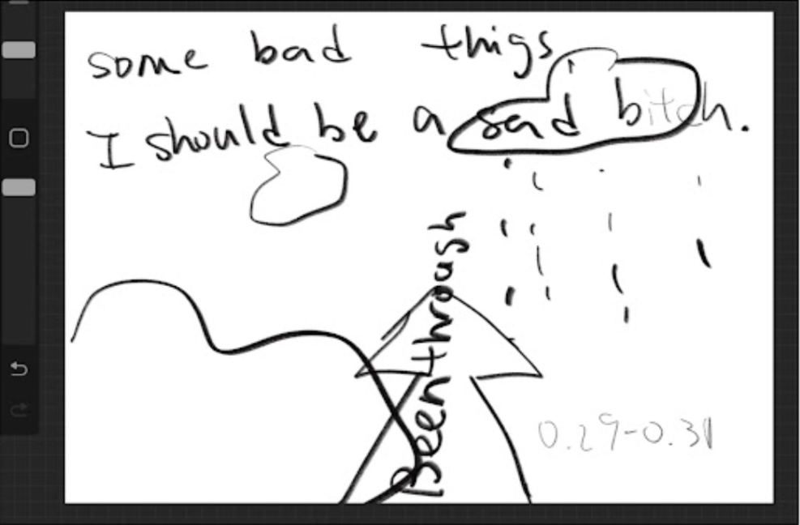
Four visual treatments
Split screens mark changes in rhythm. Neon treatments add emphasis, diagonal movement creates momentum, and repeated dollar symbols reinforce the idea of “deposits”. Each treatment connects a typographic decision to a musical moment.
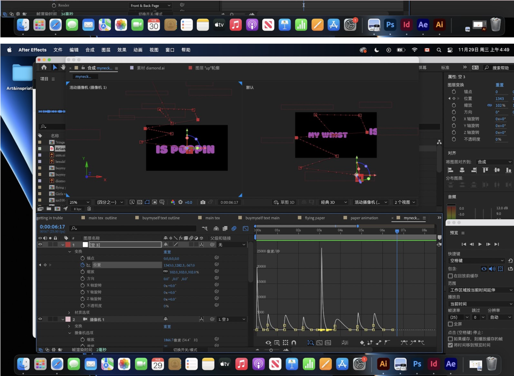
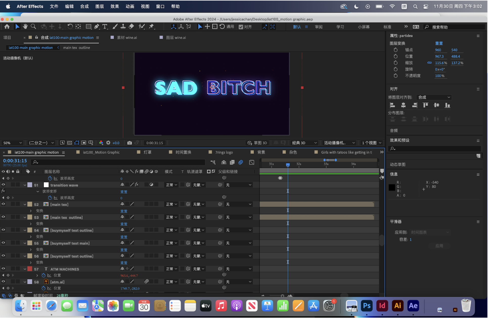
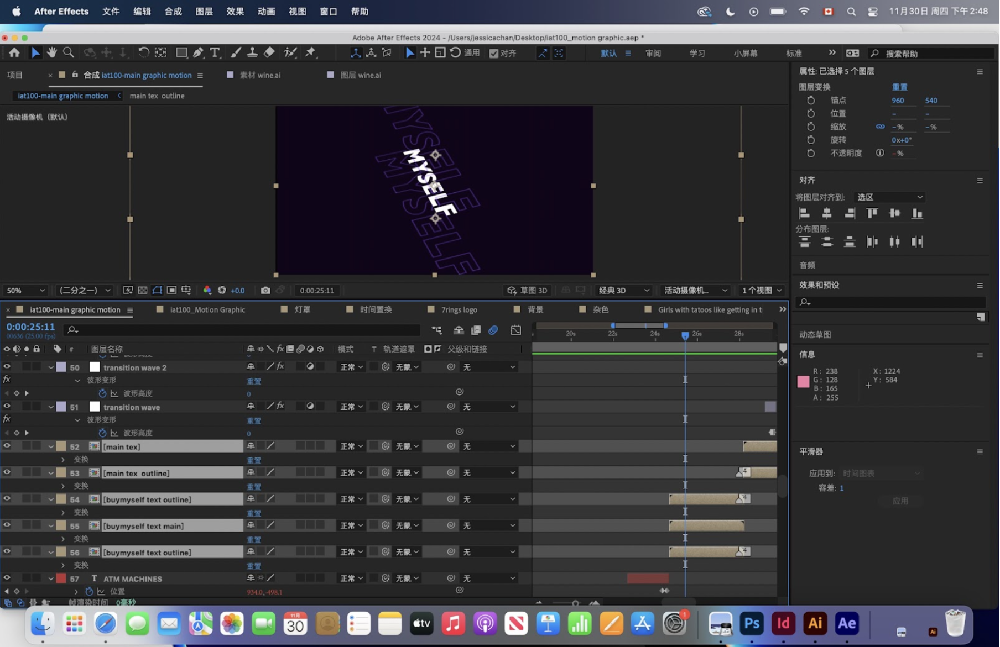
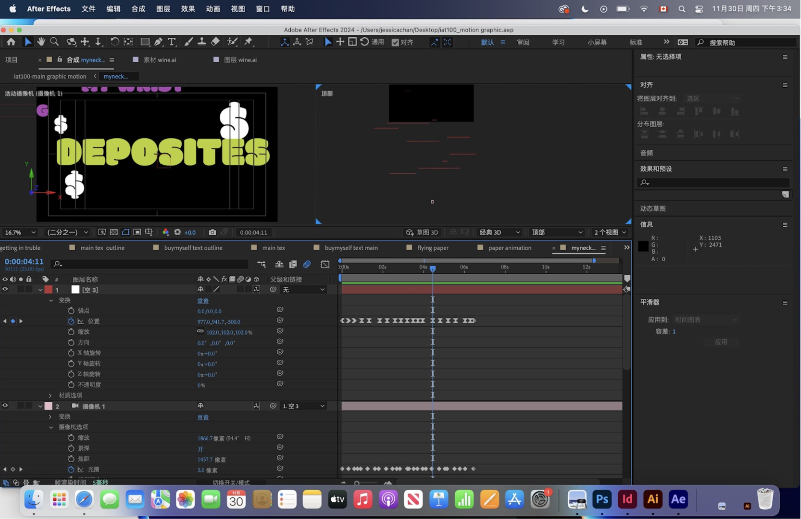
Development and reflection
Across four weeks of development, I explored sound, pacing, and visual contrast, then refined the animation in After Effects. Small changes to pauses and acceleration had a noticeable effect on how clearly each phrase read.
The final piece combines kinetic typography with 3D camera movement. It taught me to treat stillness as part of motion design: a pause can make the next movement more expressive.
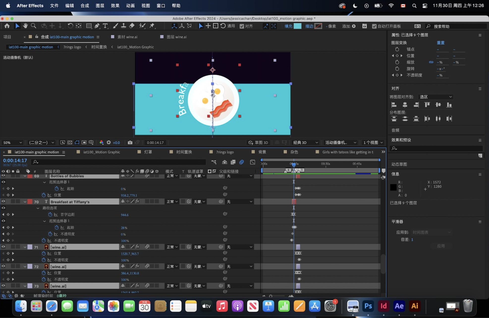
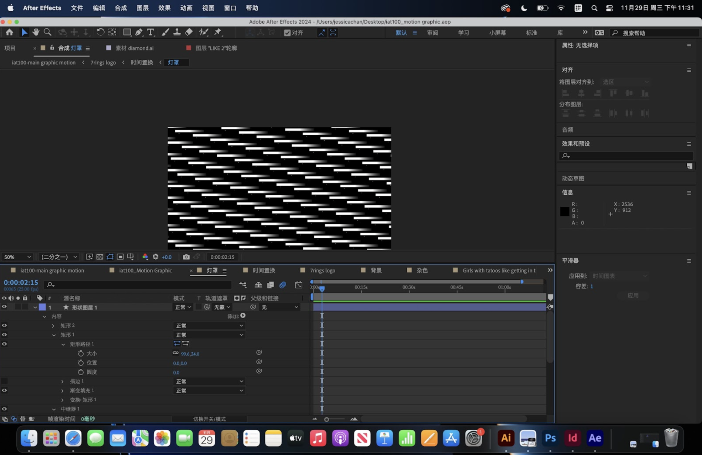
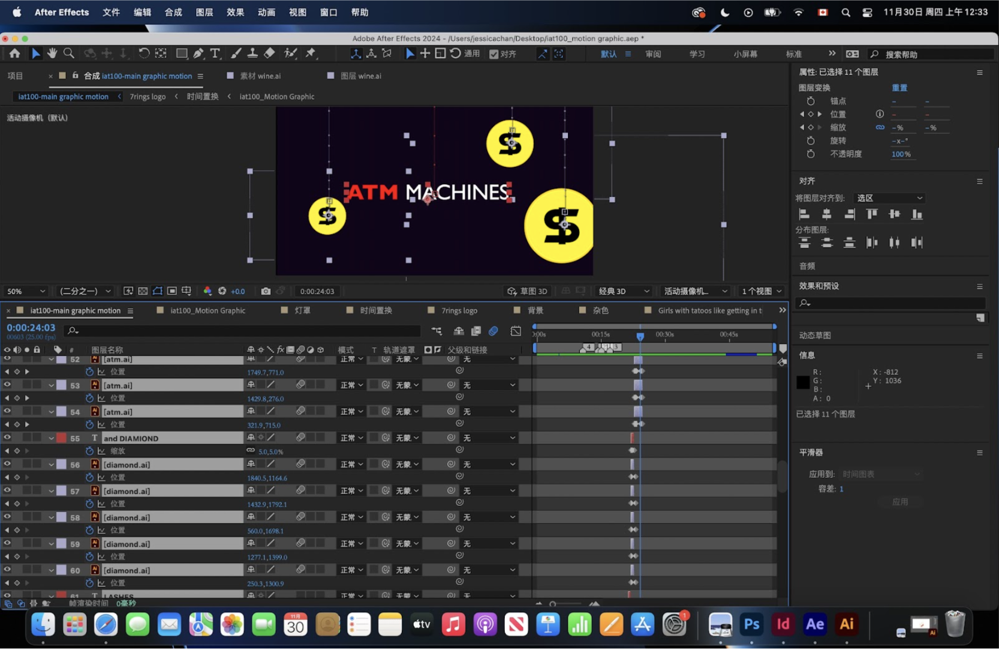
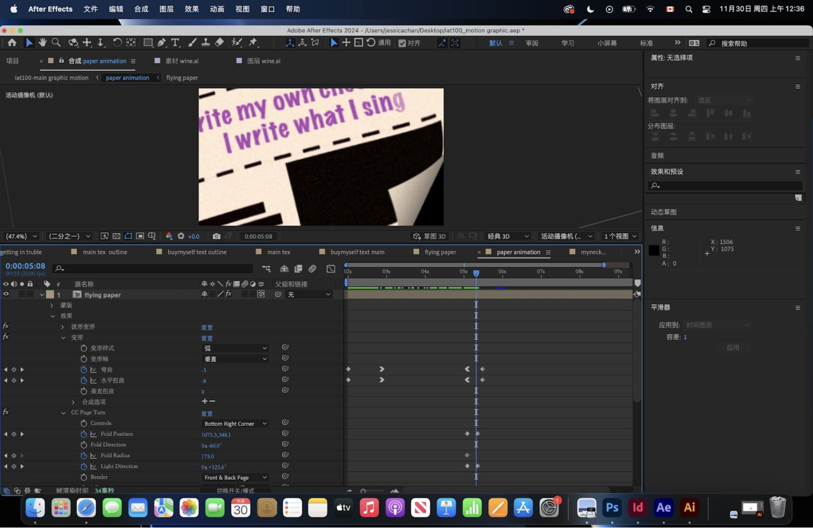